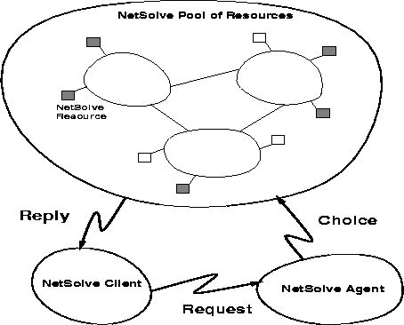

The structure of the NetSolve system organization is depicted in Figure 1. To solve the challenges highlighted above, NetSolve provides the user with a pool of computational resources. These resources are in fact computational servers that provide run-time access to arbitrarily specified numerical libraries. The user can use one of the different NetSolve client interfaces to send requests to these servers. The user requests, however, are not sent directly to the computational resources, but are instead processed by another component of the system: a NetSolve agent. The agent decides which computational server should handle the user request and assigns the request to that server.

Figure 1: The NetSolve System
The different hosts that participate in the NetSolve protocol may be located anywhere on the Internet. In fact, they may be administered by different institutions. NetSolve does not assume any centralized control over the different hosts in the system. On the contrary, each process (computational server or agent) is an independent entity: it can be stopped/restarted safely at anytime without putting the integrity of the system in jeopardy. Furthermore, a NetSolve system can contain several instances of the NetSolve agent. Suppose, for example, the set of computational resources spans several local area networks and that users on each of these networks want to use NetSolve to perform scientific computations. It is then possible to start a NetSolve agent on each network, so that user requests always go to the ``closest'' agent to be processed. Different instances of the NetSolve agent can then have different views of the set of computational resources, reflecting the fact that certain clients are closer to certain computational resources.
The specification of the computational servers and how they interact with the underlying numerical libraries is detailed in [5] where it is explained that computational servers are created with the help of a Java applet. Currently, computational servers interfacing with the following numerical libraries have been successfully created: FitPack [6], ItPack [7], MinPack [8], FFTPACK [9], LAPACK [10], BLAS [11, 12, 13], and QMR [14].